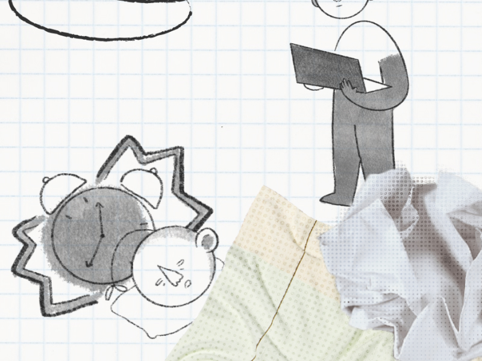
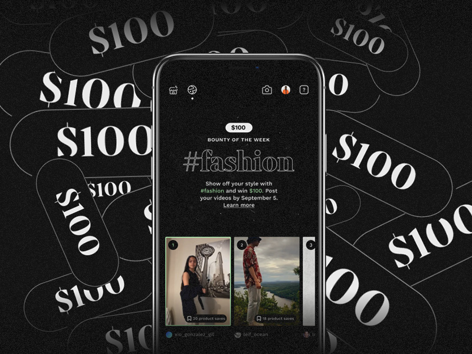

Dear Student
Interactive Game Prototype

Teleport
This Summer, I was a Product Design Intern at Teleport—an early-stage startup building a community where anyone can show off their style and earn.
I worked on design from user research to making fast-paced iterations for our mobile interfaces, and wore many other hats. From working on product specs and roadmapping, leading GTM ad campaigns, building community amongst our early adopters, and coding our front-end surfaces.
I worked on design from user research to making fast-paced iterations for our mobile interfaces, and wore many other hats. From working on product specs and roadmapping, leading GTM ad campaigns, building community amongst our early adopters, and coding our front-end surfaces.
Early-stage Startup: Mobile App + Web + Product

Iboto.ph
Designing voter education for the Philippine masses by building a national campaign to empower progressives reaching over three Filipinos in the 2019 elections.
Now gearing up to work closer with candidates and build on digital strategy for 2022. I lead a team of 25 to educate and mobilize voters.
Now gearing up to work closer with candidates and build on digital strategy for 2022. I lead a team of 25 to educate and mobilize voters.
Website + Campaign

Developh
Designing for a nonprofit on technology education and access since 2016. I build experiences programs, and the design with a distributed team of 40 at our peak, developing programs seen and felt by millions.
We run an accelerator for student founders and advocates, host talks & workshops, and build initiatives and experiences that nurture founderhood and creation.
We run an accelerator for student founders and advocates, host talks & workshops, and build initiatives and experiences that nurture founderhood and creation.
Brand + Systems + Ventures

Proposing better engagements to the user profile space at the #EarlyBird program.
Case Study

Last.fm
Empowering users with data on their sound and music on the musical calling card for music nerds.
A complete rehaul for a platform without a mobile experience, some product review, and slight music flex.
A complete rehaul for a platform without a mobile experience, some product review, and slight music flex.
Mobile Design

WYBC Radio
Designing and building a completely new radio (+ zine + podcast) experience for Yale's student radio organization.
Web + Mobile

Collab Incubator
Collab is a by-students, for-students incubator for technology and social impact. I designed our pitch off event's brand identity and forms for an event of 100+ attendees.
Event

Letterboxd Reel
For love of film: a small series of feature concepts and redesigns for the social film discovery platform.
Web UX

Design Collection
A collection of graphic and brand design work done over the years.
Graphic Design Archive

Gay Girl Prays for a Gun
A poetry series about girls, god, and trauma.
Interactive Fiction

Round
Round explores the intersection between spacial and narrative memory, loneliness, and our interactions with space and internet intimacy. ⚫
Web Experience

noob.systems
Hop through exposed CCTVs and feeds over the world with others. When you watch the world, it watches you back.
Web Experience

Ultimate Pinoy Videoke
A web toy to sync music together with your friends in the time of Zoom, modeled after Pinoy videoke for a 5-hour hackathon.
TOY

House
After Orteil's Nested, a simple universe simulator contained in directories of sound.
Web Experience

Technology.ph
Technology.ph is a newsletter-first publication centered around Philippine technology and culture. I write, design, and deliver to hundreds of subscribers twice a month.
Publication
And yet, there is so much more to create.
A week-in-the-life experience of Filipino students during the pandemic.
A student's guide to tech in the Philippines.
The radical need to collaborate.
Writing pedagogy against dictators.
Helping thousands of Filipino students in need.
Fundraising for organizations fighting to end injustice.
A love poem.
A universe simulator in sound, after Orteil's Nested.
My Art Sophomore Review.
Some girls publishing recommendations for the next thing you'll love.
Tracking companies & compensations in the Philippines.
A Topsters alternative music chart builder.
An interactive fiction about girls and God.
An introspective journey around the world with everyone you knew.
A newsletter on Philippine tech, culture, and innovation delivered to you 2x a month.
A video series about myself and my failure to grow up.
A campaign collating progressive candidates for the Philippine midterms, reaching over millions of Filipinos.
A digital experience about time, videogames, and self.
An interactive fiction piece taking place the day after you die (CW).
Reclamation, a poem published in Rambutan Literary.
A Song for Our Fathers, shared by Siklab Poetry.
A poem a day from national poetry month in 2018.
texting your ded gf.
A collection of work from age 16 and before.
A place behind the sea.